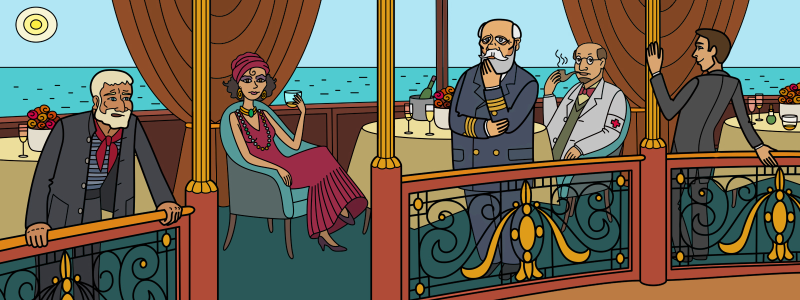

Решить
История
На трансатлантическом корабле “Королева Елизавета“, совершавшим свое путешествие в Новый Свет, произошло убийство одного из пассажиров. Кто же повинен в этом тяжком преступлении?
Известно, что убийство произошло во время ужина в 18.00. Отчего погибла жертва точно неизвестно.
Беглый осмотр не показал признаков отравления.
У детектива есть пять подозреваемых:
Леди, Боцман, Капитан, Доктор, Шпион.
Кто же из них убийца? Очевидно, что кто-то из них должен был находиться во время ужина в ресторане. Задача детектива это выяснить.
Были сопоставлены известные факты:
Каждому известно, что яд есть у Боцмана. Также некоторые очевидцы утверждают, что яд есть у Леди, т.к. у нее близкие отношения с Боцманом.
У Капитан есть сейф, в котором хранится пистолет. Ключи от сейфа есть только у него и Доктора.
Также на корабле находится такая подозрительная личность как Шпион, который имеет доступ ко всем помещениям корабля и мог украсть или яд или пистолет.
После опроса свидетелей были установлены следующие факты:
«Всю неделю был шторм, и в день убийства тоже».
«Известно, что Капитан не покидает капитанского мостика во время шторма».
«Если Капитан находился в ресторане, то Боцман точно там не был».
«Шпион посещает ресторан, если там не нет Капитана или Боцмана».
«Если не было Шпиона и был Доктор, то Леди была во время убийства».
«Леди не была в ресторане во время убийства - Леди не убийца.»
«Боцман не был в ресторане во время убийства - Боцман не убийца.»
«Капитан не был в ресторане во время убийства - Капитан не убийца.»
«Доктор не был в ресторане во время убийства - Доктор не убийца.»
«Шпион не был в ресторане во время убийства - Шпион не убийца.»
«Жертва отравлена, то убийца Леди или Боцман или Шпион.»
«Жертва застрелена, то убийца Доктор или Капитан или Шпион.»